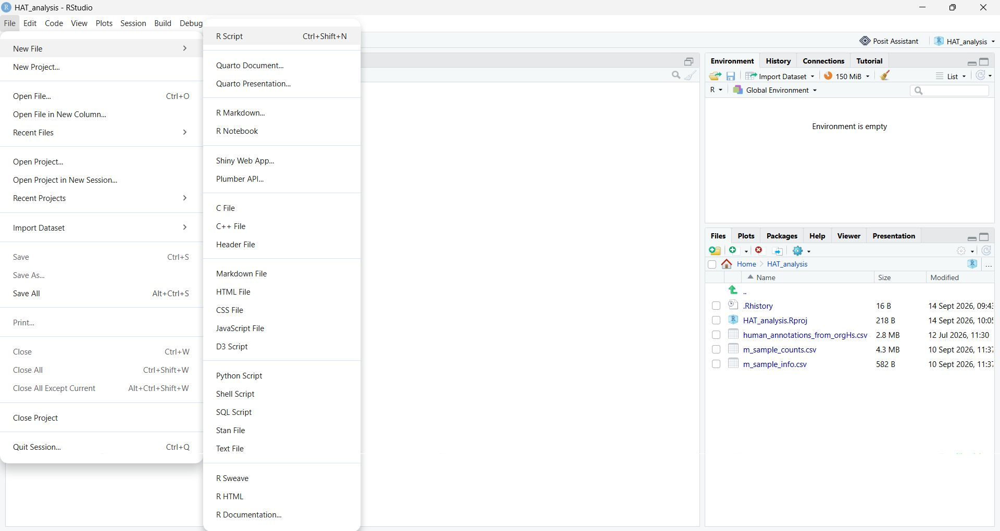

sample_info <- read.csv(
"m_sample_info.csv",
header = TRUE,
row.names = 1
)2 Getting Started with the HAT dataset
2.1 What you’ll learn
In this tutorial, we’ll learn the basics of working with biological data in R. You’ll import count data and metadata, explore the structure of the files and understand the experimental design behind our HAT dataset.
NoteLearning outcomes
By the end of this chapter you should be able to:
- explain what the rows, columns and values in a count matrix and a metadata table represent
- import CSV files and inspect the resulting matrix and data frame
- select rows, columns and individual values by position and by name
- check that count data and sample metadata contain the same samples in the same order
ISCB alignment: B3 (prepare and validate life-science data for computational analysis), E3 (manage analysis files using a clearly organised folder structure and a documented R script), H3 (use basic R syntax and select data by position and name).
2.2 Before you start
Before you begin, make sure that:
- you have opened the project created in the previous session
- the project folder contains m_sample_counts.csv and m_sample_info.csv
- the project contains the figures, objects and tables output folders
- the required packages are installed
See the previous chapter for a reminder.
2.3 Creating an analysis script
Before we begin importing data, create a new R Script and save it in your project folder with an understandable filename (e.g. HAT_analysis.R). You can do this by selecting: File → New File → R Script and then saving the file in your project folder.

Why do this? Every statement that you run during an analysis should be recorded in a script. This is a key component of reproducible research. A good analysis should be understandable and repeatable by both you and other researchers. Although it is possible to work interactively by typing statements directly into the console, those statements are easily lost once RStudio is closed.
By saving your code in a script, you create a permanent record of:
- How the data were imported
- How the data were processed
- Which statistical analyses were performed
- How tables and figures were generated
Over the course of these tutorials, you will build up your script to create a complete record of your analysis workflow. Make sure you save your script often to avoid losing any work.
2.4 Importing and inspecting data files
The first step in any analysis is getting your data into R. We have two files:
- Count data (
m_sample_counts.csv): rows are genes labelled with stable Ensembl IDs, columns are samples and each cell is the number of sequencing reads or fragments assigned to that gene in that sample - Sample metadata (
m_sample_info.csv): rows are samples, columns are variables (e.g. disease status, sex, age)
TipTry it yourself: Predict before you import
Open m_sample_counts.csv and m_sample_info.csv in a text editor before running any R code (you can also use Excel but do not overwrite the original .csv files).
- Which column do you think will become the row names of each table once loaded into R?
- Are the values in
m_sample_counts.csvwhole numbers or decimals? Why might that matter for later analysis? - How many metadata columns does
m_sample_info.csvhave, and which one records the treatment group?
Now, let’s load these files into RStudio. We could use the Import dataset menu item but as we want our workflow to be recorded and reproducible, it would be best to use the script window. Let’s import the sample metadata first (the patient information).
To actually run this code, place the cursor anywhere inside the complete statement and click Run, or select all lines of the statement and click Run. In RStudio, you can also use Ctrl + Enter. If the console displays + instead of >, R is usually waiting for the rest of an incomplete statement, often because a closing parenthesis or quotation mark is missing.
NoteMulti-line statements
This statement could also be written on a single line as sample_info <- read.csv("m_sample_info.csv",header = TRUE,row.names = 1) but R statements do not have to fit on a single line. If R reaches the end of a line while the parentheses ( is still open, it will continue until it reaches the matching closing parenthesis ). A useful style that helps with readability is to place the opening function call on the first line, indent each argument and place the closing parenthesis on its own line.
What just happened:
read.csv()reads a CSV file into an R data frame objectheader = TRUEmeans the first row contains column namesrow.names = 1means the first column becomes the row names (gene IDs or sample IDs)
TipTry it yourself: Data import practice
How would you import the sample count data into a data frame called count_data? Try this without looking back first but if you get stuck, refer to the previous example or open the solution below.
TipSolution
count_data <- read.csv(
"m_sample_counts.csv",
header = TRUE,
row.names = 1
)Convert the count data to a matrix
We now need to perform one additional step because of how R represents tabular data and because several downstream tools expect a numeric matrix.
The read.csv() function imports the sample counts as a data frame, which is useful for storing tabular data because different columns can contain different types of information, like numbers, text or categories. You can think of it like an Excel worksheet. However, many downstream tools expect the data to be just one type (e.g. numbers) so they can make various assumptions to speed up analysis. R has a special type of object called a matrix to store these single-type data. To convert count_data into a matrix, use:
count_data <- as.matrix(count_data)This statement replaces the data-frame version of count_data with a matrix version. In this case, that is intentional because the downstream analysis expects a numeric matrix.
2.5 Check that the data were imported correctly
Before continuing, we should check that the two files were imported as expected and that they describe the same samples. Finding problems now prevents counts from being matched to the wrong sample information later.
2.5.1 Check the dimensions
The dim() function reports the number of rows and columns in an object.
# Dimensions are reported as: rows, columns
dim(count_data)
dim(sample_info)In count_data, the rows represent genes and the columns represent samples. In sample_info, the rows represent samples and the columns describe those samples.
TipTry it yourself: Interpret the output
- How many genes and samples are in
count_data? - How many samples are in
sample_info? - Does the number of columns in
count_datamatch the number of rows insample_info?
TipSolution
- There are 65,217 genes across 21 samples.
- There are 21 samples with 6 types of metadata.
- There are 21 columns in
count_dataand 21 rows insample_info.
2.5.2 Check the row and column names
R objects can have names attached to their rows and columns. We can retrieve these using rownames() and colnames().
# Display the first few gene identifiers
head(rownames(count_data))
# Display the sample identifiers
colnames(count_data)
rownames(sample_info)
# Display the metadata variable names
colnames(sample_info)2.5.3 Check that the samples match
Samples are stored as columns in count_data and as rows in sample_info. We therefore need to check whether colnames(count_data) and rownames(sample_info) contain the same identifiers in the same order. We could check them manually but we can save time with the identical() function that checks whether two objects contain the same values in the same order.
# check whether row names and column names match in the two data objects
identical(
colnames(count_data),
rownames(sample_info)
)[1] TRUEA result of TRUE confirms that the sample identifiers match and are in the same order.
NoteComments
You may have noticed that some lines in the code begin with a hash symbol, #. These lines are called comments.
R ignores everything after # on that line. Comments are written for people reading the code and are not treated as instructions for R.
Comments can help us:
- explain the purpose of a section of code
- record why an analytic decision was made
- make a script easier to navigate
- help someone else understand and reuse our analysis
- remind our future selves what the code was intended to do
A useful comment normally explains why a function is being run or what a group of statements is intended to achieve. It should not simply repeat something that is already obvious from the code.
For example, this comment is not especially helpful:
# Use dim on count_data
dim(count_data)This version better explains the purpose of the statement at this point in the script:
# Confirm the number of imported genes (rows) and samples (columns)
dim(count_data)Comments should be useful but concise. Too many comments can make a script harder to read, particularly when every simple function has a comment that merely repeats the code.
TipTry it yourself: Commenting practice
Think of some comments to add to your previous import and as.matrix() lines that would be useful to explain what they are doing and why.
2.6 Indexing and subsetting
Modern biological datasets can contain thousands of variables (e.g. genes) and samples. We don’t always want to examine or analyse every value at the same time. Instead, we often need to select:
- one particular gene
- a group of genes
- one or more samples
- a metadata variable, such as status group
- samples or genes that meet a particular condition
Selecting part of an R object is called subsetting and indexing tells R which rows, columns, or individual values we want to select. For a matrix or data frame, values are selected using square brackets:
object[rows, columns]The comma separates the row selection from the column selection:
- before the comma specifies the rows
- after the comma specifies the columns
- leaving one side empty means selecting all rows or all columns
2.6.1 Selecting data by position
We can select rows and columns according to their numerical positions.
This can be difficult to follow at first, so let’s practice using a small example matrix containing two genes and three samples. Imagine that this matrix is stored in an object called small_matrix. You do not need to enter or run these statements.
sample_1 sample_2 sample_3
gene_A 5 0 8
gene_B 2 4 1
TipTry it yourself: Predict what will happen
For each expression, predict what will be displayed from the small matrix. Compare your answers with a partner and if your answers differ, agree on a prediction before revealing the solution.
small_matrix[1, ]
small_matrix[, 2]
small_matrix[2, 3]
small_matrix[1:2, 2:3]
TipSolution
Compare the outputs with your predictions. If they differ, identify whether the problem involved the row position, column position, comma, or use of a name.
small_matrix[1, ]
sample_1 sample_2 sample_3
5 0 8
small_matrix[, 2]
gene_A gene_B
0 4
small_matrix[2, 3]
[1] 1
small_matrix[1:2, 2:3]
sample_2 sample_3
gene_A 0 8
gene_B 4 1Let’s try it out on the main sample count set:
# Select the first gene across all samples
count_data[1, ] h1.1 h1.2 h1.3 h1.5 h2.2 h2.3 h2.4 h2.5 h2.6 shi.1 shi.2
11 10 5 8 2 4 15 7 6 6 1
slo.1 slo.5 slo.6 slo.7 ctrl.2 ctrl.3 ctrl.6 ctrl.7 ctrl.8 ctrl.9
11 0 3 7 16 3 5 14 12 7 # Select the first gene of the third sample
count_data[1, 3][1] 5# Select the first gene of the first three samples
count_data[1, 1:3]h1.1 h1.2 h1.3
11 10 5 In the first statement, 1 selects the first row and the blank space means all the columns are selected.
count_data[1, ]In the second statement, 1 selects the first row and 3 selects the third column.
count_data[1, 3]In the third statement, 1:3 creates the sequence 1, 2, 3. The statement therefore selects the first gene and the first three sample columns:
count_data[1, 1:3]Selecting by position is useful when exploring a dataset. However, positions can change if rows or columns are added, removed or rearranged, so be careful.
ImportantDebugging an indexing error
Errors are a normal part of scripting. The following statement was intended to select the value in the first row and third column of count_data, but it contains an error.
Enter this statement temporarily, run it, and then correct it immediately. Do not leave the erroneous version in your completed script.
count_data[1 3]- Which part of the indexing structure is missing?
- Correct the statement and run it again. Which part of the error message or indexing structure helped you identify the problem?
- Check that the corrected statement returns one value.
TipTry it yourself: Solution
The comma separating the row selection from the column selection is missing. Without the comma, R cannot interpret 1 3 as a valid indexing expression and states there is an unexpected numeric constant. The corrected statement is:
count_data[1, 3][1] 52.6.2 Selecting data by name
We can also select rows and columns using their names. Again, we’ll practice using the small example matrix containing two genes and three samples. You do not need to enter or run these statements.
sample_1 sample_2 sample_3
gene_A 5 0 8
gene_B 2 4 1
TipTry it yourself: Predict what will happen
For each expression, predict what will be displayed from the small matrix:
small_matrix["gene_B", ]
small_matrix[, "sample_3"]
small_matrix["gene_B", "sample_2"]
TipSolution
Compare the output with your prediction. If they differ, identify whether the problem involved the row position, column position, comma or use of a name.
small_matrix["gene_B", ]
sample_1 sample_2 sample_3
gene_B 2 4 1
small_matrix[, "sample_3"]
[1] 8 1
small_matrix["gene_B", "sample_2"]
[1] 4Let’s try it out on the count matrix. For example, ENSG00000100342 is the Ensembl identifier for the gene APOL1, an important gene centrally involved in human African trypanosomiasis. We can use this identifier to retrieve the counts for APOL1 across all samples.
We can also assign the result of a subsetting to a new object so that we can inspect or reuse it later. The new object, apol1_counts, is a vector containing one count for each sample:
apol1_counts <- count_data["ENSG00000100342", ]
apol1_counts h1.1 h1.2 h1.3 h1.5 h2.2 h2.3 h2.4 h2.5 h2.6 shi.1 shi.2
1680 1081 2228 2894 1463 1353 1027 806 1225 707 582
slo.1 slo.5 slo.6 slo.7 ctrl.2 ctrl.3 ctrl.6 ctrl.7 ctrl.8 ctrl.9
1023 732 1166 1504 1281 744 1006 1659 1190 1129 Selecting by name is usually safer and clearer than selecting by position. The gene may not always remain in the first row, but its identifier should continue to refer to the same gene.
2.6.3 Selecting columns from a data frame
The $ operator can be used to select a named column from a data frame like sample_info but it cannot be used to select from a matrix like count_data. For example, to show the age column of sample_info:
sample_info$age
TipTry it yourself: Indexing practice
Using the objects count_data and sample_info, modify and run code to display:
- the tenth gene, across every sample
- the first five genes for one sample, chosen by its name rather than its position
Try this without looking back first but if you get stuck, refer to the previous examples or open the solution below.
TipSolution
# show the tenth gene, across every sample
count_data[10, ] h1.1 h1.2 h1.3 h1.5 h2.2 h2.3 h2.4 h2.5 h2.6 shi.1 shi.2
510 332 536 693 390 458 514 693 559 171 210
slo.1 slo.5 slo.6 slo.7 ctrl.2 ctrl.3 ctrl.6 ctrl.7 ctrl.8 ctrl.9
388 188 341 391 749 150 534 473 619 298 # show the first five genes for a sample (e.g. h1.1), chosen by name rather than position
count_data[1:5, "h1.1"]ENSG00000000003 ENSG00000000005 ENSG00000000419 ENSG00000000457 ENSG00000000460
11 0 241 523 82 2.7 Understanding the experimental design
We can use the table() function with indexing and subsetting to help understand the design of the experiment. For example, to see a summary of the status of different groups in our dataset:
table(sample_info$status)
ctrl hat sero
6 9 6 Our dataset has three groups: controls, SERO TL+ (asymptomatic carriers) and HAT (symptomatic carriers). We will retain all three groups in the dataset, although some later analyses will focus specifically on the HAT-versus-SERO TL+ comparison.
TipTry it yourself: More indexing practice
How would you modify the statement to summarise the sex data for the sample info? Try this without looking back first but if you get stuck, refer to the previous example or open the solution below.
Why do you think it has this distribution in the study?
TipSolution
table(sample_info$sex)
m
21 For this initial analysis, we are only focusing on male samples. Possible reasons for analysing a single sex include sampling limitations or an attempt to reduce variation associated with sex. We will return to the complete dataset later to explore the effect of sex and consider how including it changes the analysis.
- What could happen if sex affects gene expression but is ignored during the analysis?
- Can results from the male-only analysis automatically be generalised to female participants?
TipPossible answers
If samples from different sexes were included but sex was ignored, differences associated with sex could be mistaken for differences associated with disease status. Sex could also increase variation within the study groups, making genuine differences between groups more difficult to detect.
The analysis can describe patterns in the male participants included in this study but it does not show that the same patterns occur in female participants. Female samples would need to be included before we could assess whether the findings are similar across sexes.
Warning
Now would be a good time to make sure your script is saved and to add some comments to your file to ensure you or anyone else can understand what your script does.
2.8 Summary
In this chapter, you:
- imported RNA-seq count data and sample metadata
- inspected the structure and experimental design of the dataset
- practised indexing and subsetting a matrix and a data frame
- checked that metadata and count data are correctly aligned
- debugged an error message
These skills form the foundation for everything that follows. In the next chapter, you will calculate a sample-level quality summary and use ggplot2 to create your first visualisation.
2.9 Optional extra activities
You have now completed the required activities for this chapter. The remaining activities are optional but valuable opportunities for further practice. You can attempt them now or return to them later.
TipOptional Activity 1: Explore participant age
Age is a biological characteristic that could influence gene expression. It is therefore important to understand the ages represented in the study.
The age of each participant is stored in the age column of sample_info.
Can you use R to find:
- the age of the youngest participant
- the age of the oldest participant
- the difference between the oldest and youngest ages
The R functions min() and max() may be useful.
After completing the calculations, consider the following questions:
- Does the study include a narrow or wide range of participant ages?
- Why might age affect gene expression?
- Why would it be useful for comparison groups to have similar age distributions?
- If one group contained mainly younger participants and another mainly older participants, would it be easy to determine whether differences in gene expression were associated with age or group status?
TipOne possible approach
youngest_age <- min(sample_info$age)
oldest_age <- max(sample_info$age)
youngest_age[1] 10oldest_age[1] 70oldest_age - youngest_age[1] 60The difference between the oldest and youngest participants shows the range of ages represented in the study.
If comparison groups have substantially different ages, age and group status could both provide possible explanations for differences in gene expression. This is called confounding.
Ideally, the groups would have reasonably similar age distributions. Alternatively, age may need to be considered in the statistical analysis.
TipOptional Activity 2: Subsetting samples by biological group
Previously, we selected samples by entering their identifiers directly. We can also use the sample information to select samples belonging to a particular biological group, such as the HAT group.
The following comparison asks whether the status of each sample is “hat”:
sample_info$status == "hat" [1] TRUE TRUE TRUE TRUE TRUE TRUE TRUE TRUE TRUE FALSE FALSE FALSE
[13] FALSE FALSE FALSE FALSE FALSE FALSE FALSE FALSE FALSEThis produces a series of TRUE and FALSE values. We can use these logical values to select the row names of the HAT samples and store them in a new vector called hat_samples:
hat_samples <- rownames(sample_info)[sample_info$status == "hat"]
hat_samples[1] "h1.1" "h1.2" "h1.3" "h1.5" "h2.2" "h2.3" "h2.4" "h2.5" "h2.6"We can then use hat_samples to subset the count matrix to return specific information. For example, to retrieve the APOL1 counts for all samples in the HAT group.
How would you complete the missing part of this statement to retrieve the APOL1 counts for the samples identified in hat_samples. Remember, the Ensembl identifier for APOL1 is “ENSG00000100342” and that in count_data genes are stored as rows while samples are stored as columns.
count_data[________, ________]- How many APOL1 counts were returned?
- Does this agree with the number of HAT samples shown in the experimental-design table?
- Which HAT sample has the highest observed APOL1 count?
TipPossible Solution
# Identify the HAT samples
hat_samples <- rownames(sample_info)[sample_info$status == "hat"]
# Retrieve APOL1 counts for the HAT samples
count_data["ENSG00000100342", hat_samples]h1.1 h1.2 h1.3 h1.5 h2.2 h2.3 h2.4 h2.5 h2.6
1680 1081 2228 2894 1463 1353 1027 806 1225 - Nine APOL1 counts are returned.
- Yes. This agrees with the nine HAT samples shown in the experimental-design table.
h1.5has the highest observed APOL1 count, with 2,894 counts.
These values describe the samples in this dataset, but they are not sufficient on their own to conclude that APOL1 expression differs between the biological groups.